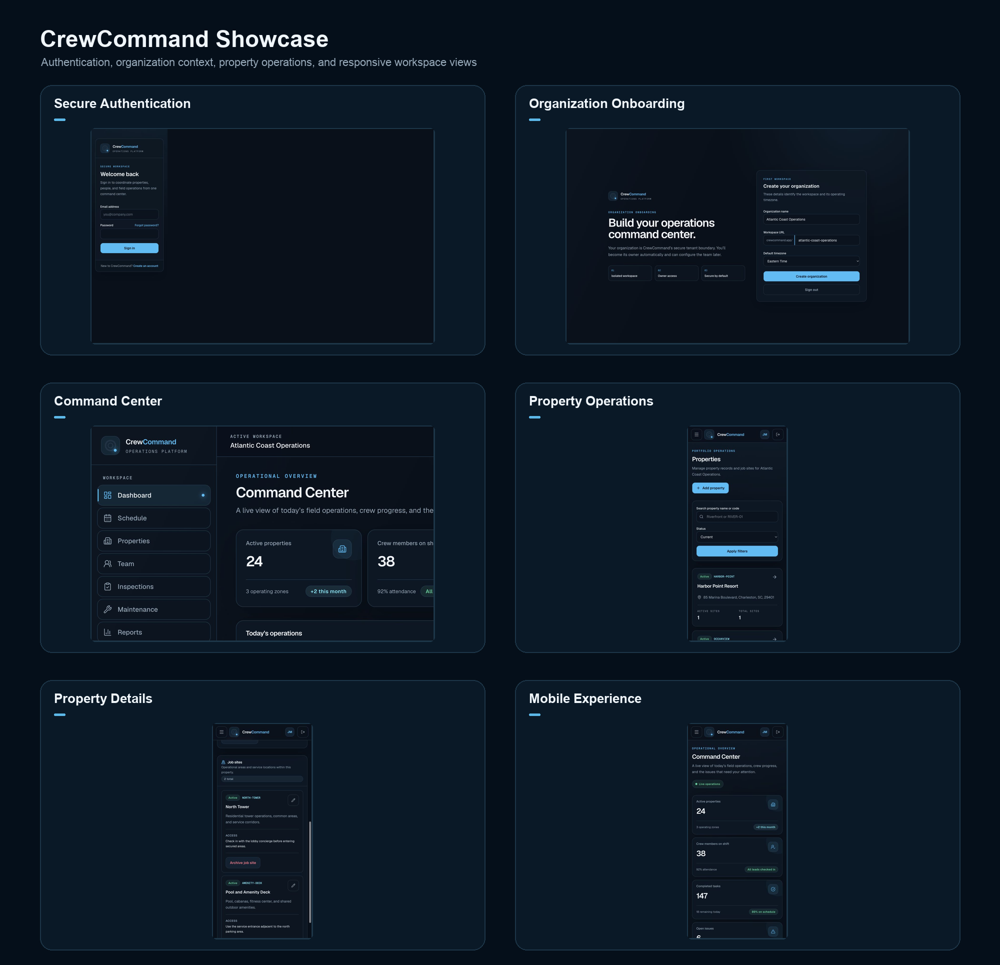
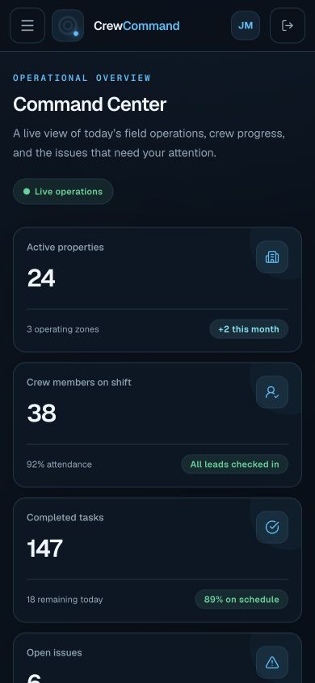

Leads fall through the cracks.
Inquiries arrive through forms, calls, inboxes, and messages without one clear path for follow-up.
Digital systems / technology solutions
ACC Solutions studies how your business operates, identifies where technology can create leverage, then designs and builds the websites, software, automation, integrations, and digital systems needed to make it happen.
We build the digital systems businesses operate on.
Business friction
ACC is built for companies that have momentum, but can feel the drag of disconnected tools, manual work, scattered information, and customer experiences that no longer match the quality of the business.
Inquiries arrive through forms, calls, inboxes, and messages without one clear path for follow-up.
Information lives in too many places, so people repeat work or chase answers manually.
Jobs, customers, properties, tasks, and status updates become hard to track as the company grows.
A public site may look decent but still fail to support intake, booking, CRM, analytics, or operations.
What worked for a small team can break when more employees, customers, locations, or requests are involved.
The tools are there, but the business still lacks a system that makes the operation easier to run.
How ACC thinks
ACC studies the current operation first: what slows the company down, what customers experience, where information gets lost, what employees repeatedly do manually, and what management cannot easily see.
Then we recommend the appropriate system. Sometimes that is a better website. Sometimes it is a dashboard, portal, automation, CRM workflow, full-stack application, or a combination of connected tools.
Solutions / capabilities
The goal is not to sell every client the same package. The goal is to put the right technology plan in place and build the solution around the way the company actually works.
Premium websites and digital infrastructure that make the business easier to trust, contact, measure, and grow.
Custom applications, portals, dashboards, and software designed around internal workflows and visibility.
Connected workflows that reduce manual handoffs and keep information moving between the tools a business uses.
Ongoing improvement for businesses that need their digital systems to evolve as operations become more complex.
Flagship systems proof
CrewCommand is an active development preview for a custom operations platform. It is presented honestly as systems proof: a demonstration of how ACC can organize real business workflows into a centralized digital environment.
Property and field-service operations often rely on scattered information, texts, paper processes, spreadsheets, and disconnected tools.
CrewCommand demonstrates a centralized platform built around properties, job sites, users, workflows, and management visibility.
Give management one organized operating environment instead of forcing teams to piece information together across disconnected systems.


Tell us where your operation is scattered. ACC can help map the system and determine what should be built next.
Talk Through a SystemDigital presence
Web development remains a major ACC strength. The difference is that a website is treated as part of the larger digital operation, not just a brochure.
A properly designed website can connect into lead capture, scheduling, CRM, payments, customer communication, analytics, automation, and internal processes.
Selected work / case studies
The work below includes active projects, development previews, public websites, and front-end applications. ACC does not invent results. The proof is in the thinking, the build quality, and the system purpose.

Custom Operations Platform
Development PreviewBusiness Website
Content Update in ProgressLandscaping Business Website
Content Update in ProgressDigital Systems Website
LiveInteractive Weather Application
Recently LaunchedLive Portfolio: These are active projects. Some continue to evolve as clients provide additional content, photography, branding, and business information.
Process
Understand the operation, goals, bottlenecks, and opportunity.
Determine what needs to change and where technology creates leverage.
Design the experience, workflow, architecture, or system.
Develop and integrate the solution with clean, maintainable implementation.
Test, deploy, prepare handoff, and transition the system into use.
Measure, maintain, automate further, and evolve as the business grows.
Ongoing partnership
ACC can continue supporting improvements, maintenance, new functionality, automation, integrations, optimization, analytics, and additional systems as the business changes.
Start with the business problem
Tell ACC what you are trying to accomplish, what is taking too much time, what is not working, or where the business needs to grow. We will help determine what technology should do next.
Talk With ACCInquiry
You do not need to know whether the answer is a website, CRM, automation, software, dashboard, portal, or integration. Explain the business problem. ACC will help map the right solution.